- Módulo: Administración de Sistemas Operativos
- Título del trabajo Servidor de Impresión
- Componentes del grupo: Silvano Pérez Yanes
- Curso Académico: 2º ASIR
- Fecha de entrega: 13 de marzo de 2015
En esta actividad vamos montar un servidor de impersión en un servidor de windows.
Lo primero, es tener instalado el servidor de impresión en el servidor.
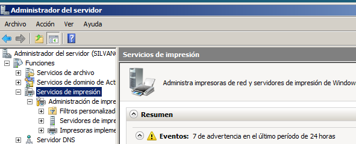Una vez hecho tendremos que instalar el pdfcreator y una vez hecho agregar una impresora local y mi caso ya se agregó con anterioridad.
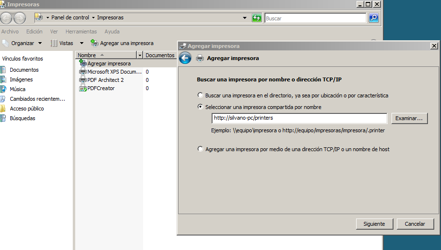A contuniación, debemos compartir la impresora con el cliente que queremos que use la impresora
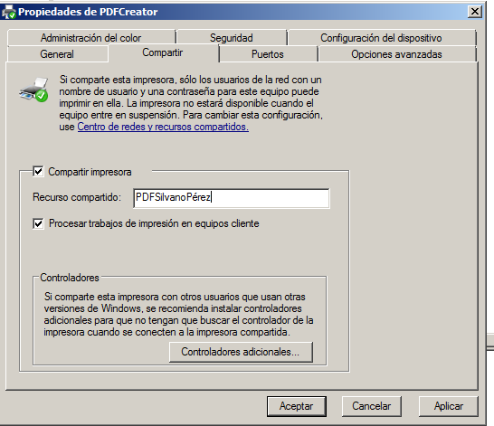Ahora creamos un bloc de notas con nuestro nombre, una vez hecho nos saldrá el fichero en pdf con los resultados
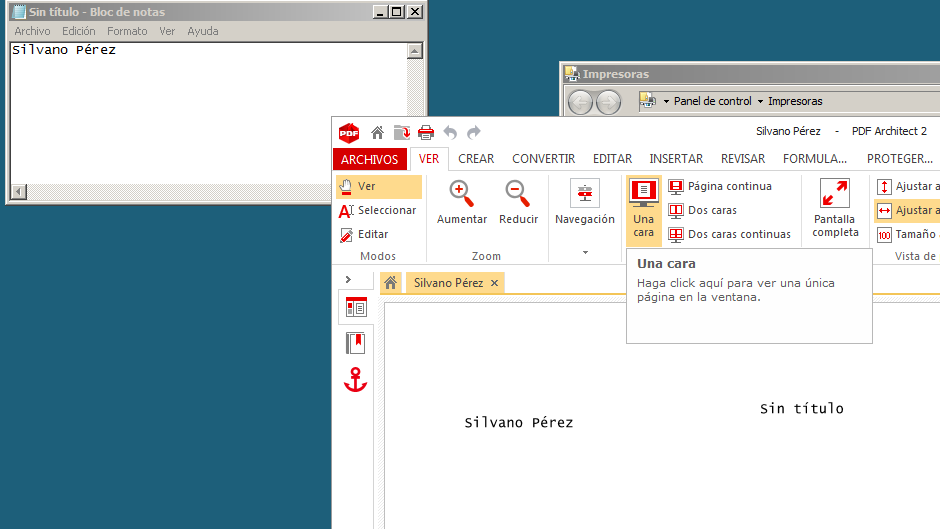Comprobamos que el servidor puede acceder a la impresora.
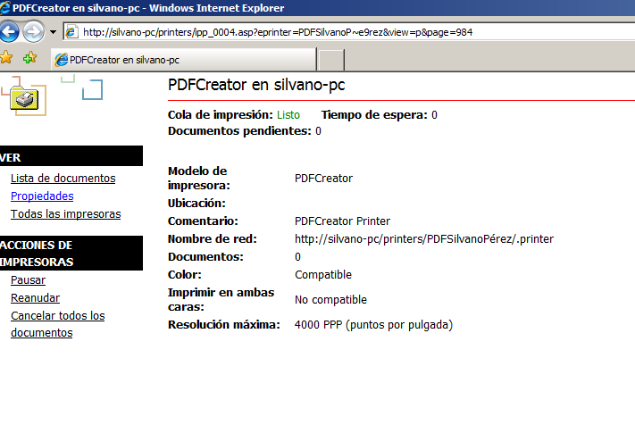También probamos accediendo a la impresora desde el cliente
 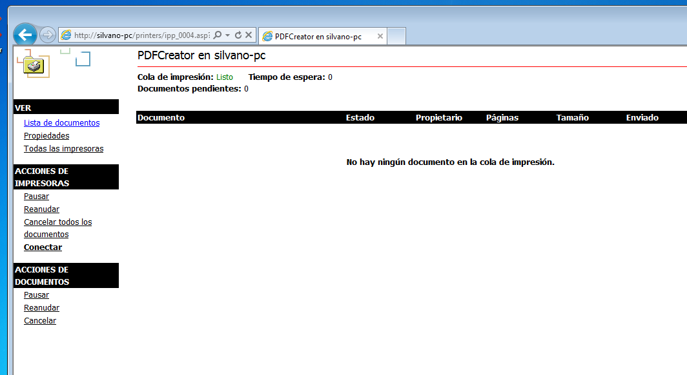
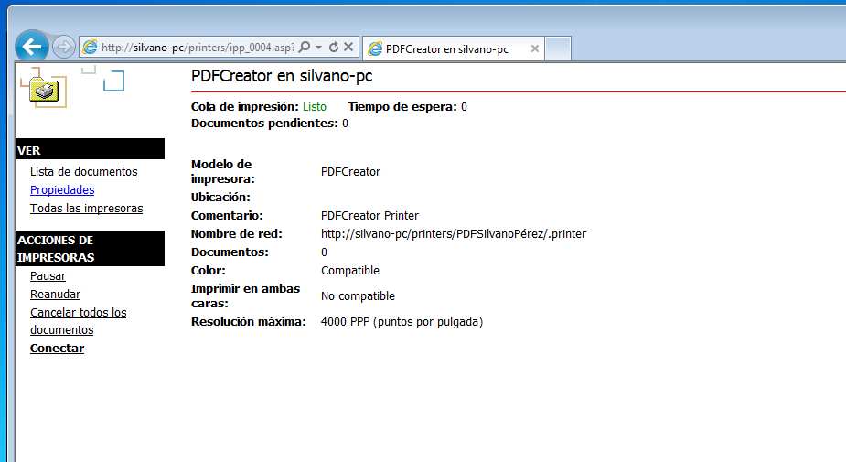
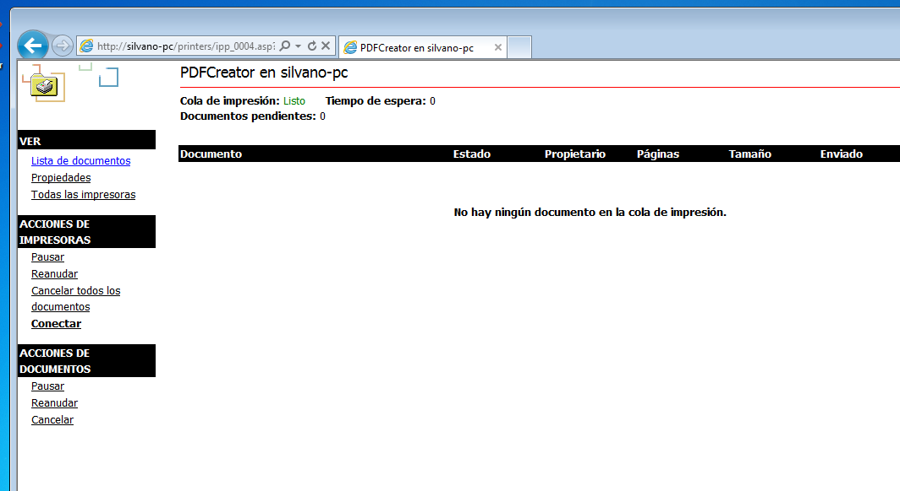
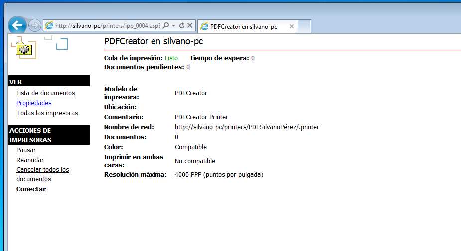
Luego en el servidor de impresión, probamos a pausar la impresora para comprobar que los archivos que queramos imprimir se queden en cola de espera.
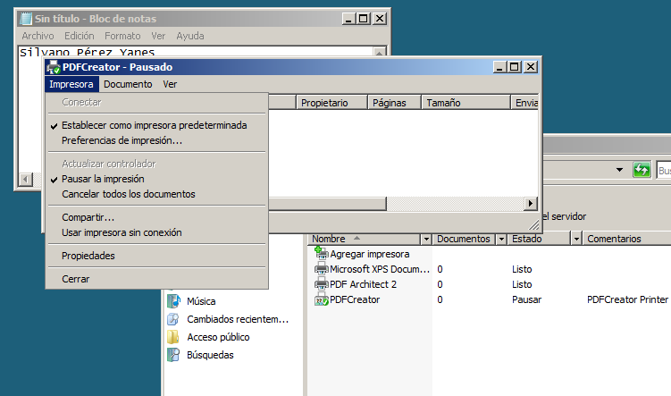 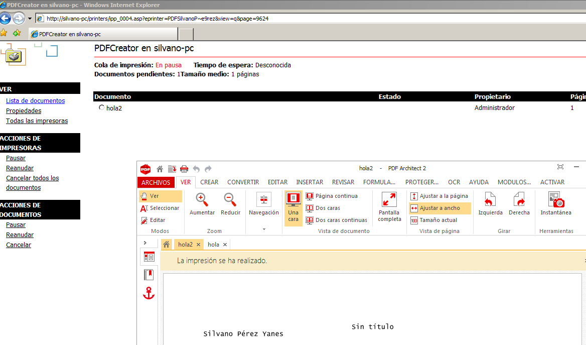Para finalizar, probamos en el cliente, para ver que imprime y de que al igual que el servidor pueda imprimir y los archivos se puedan quedar en cola si se pausa la impresora.
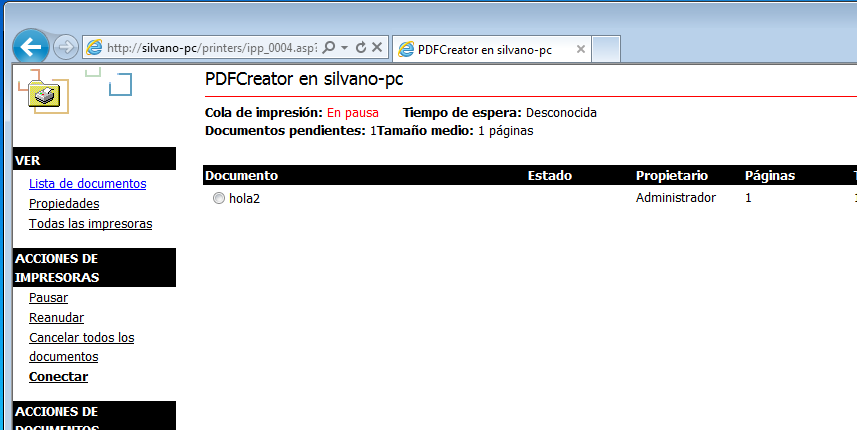 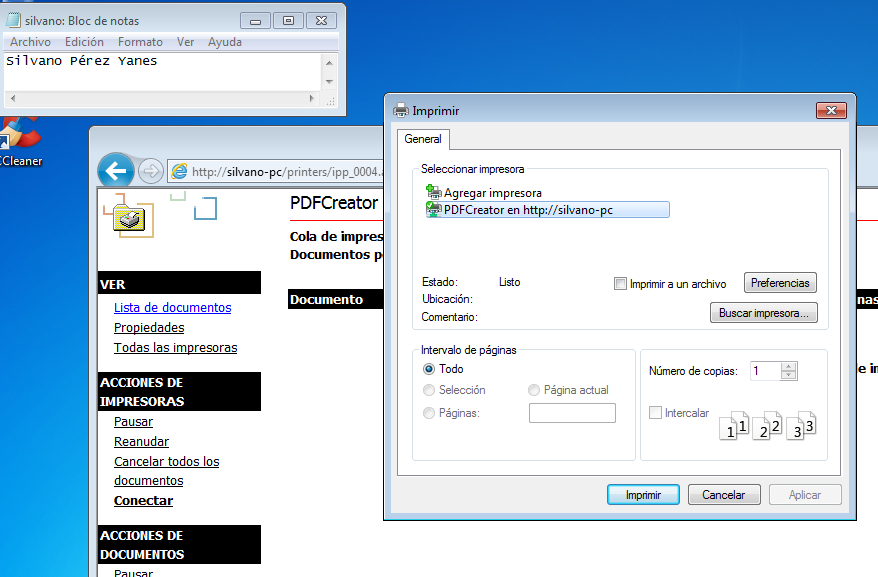 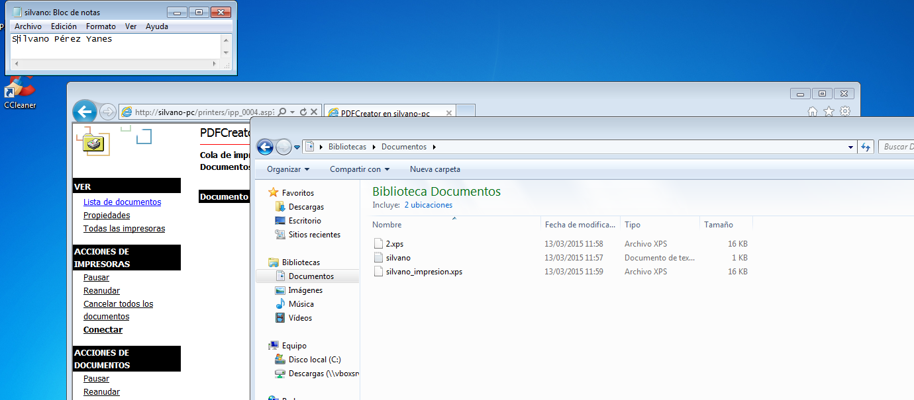